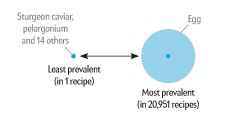
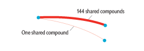

How to Read This Graphic
Each blue dot is a food. Similar foods are grouped into 14 category columns (listed in alphabetical order).
The size of a dot shows how popular the food is — the frequency with which it appears in a global 56,498-recipe database.

A line connecting the two dots means the two foods share at least one flavor-related chemical compound. The more flavor compounds they share, the thicker the line. Red lines connect foods in different categories.

Gray lines connect foods in the same category.
A food's vertical position on the page reveals the total number of foods that connect to it. Foods at the top of the page share flavor compounds with many other foods. Foods at the bottom of the page are completely unique — they don'’t share flavors with any other foods.
When selecting a line in the main graphic, all the foods that have that particular number of compounds that they share with other foods are shown, as well as the foods they link with. Clicking on an empty space in the background will remove the current selection.
The graph on the right shows the selected foods by the number of times they appear in a recipe in the database. The graph uses a logarithmic scale.
Because of space constraints only the most popular ingredient in a cluster of dots is labeled.
- Interactive by Jan Willem Tulp
- SOURCE: “Flavor Network and the Principles of Food Pairing,” by Yong-Yeol Ahn, Sebastian E. Ahnert, James P. Bagrow and Albert-László Barabási, in Scientific Reports, Vol. 1, Article No. 196; December 15, 2011. With thanks to Sebastian Ahnert